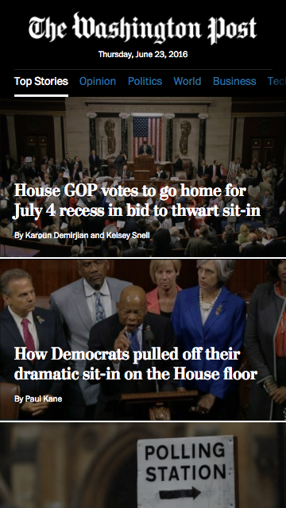
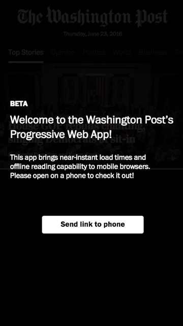
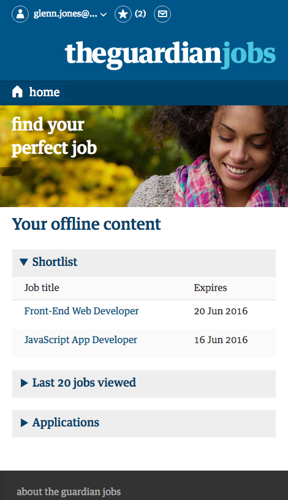
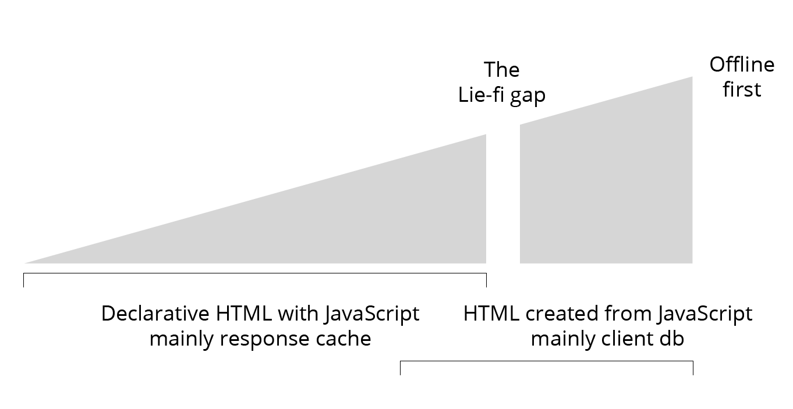
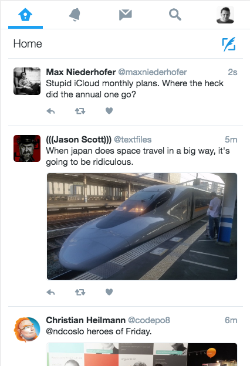
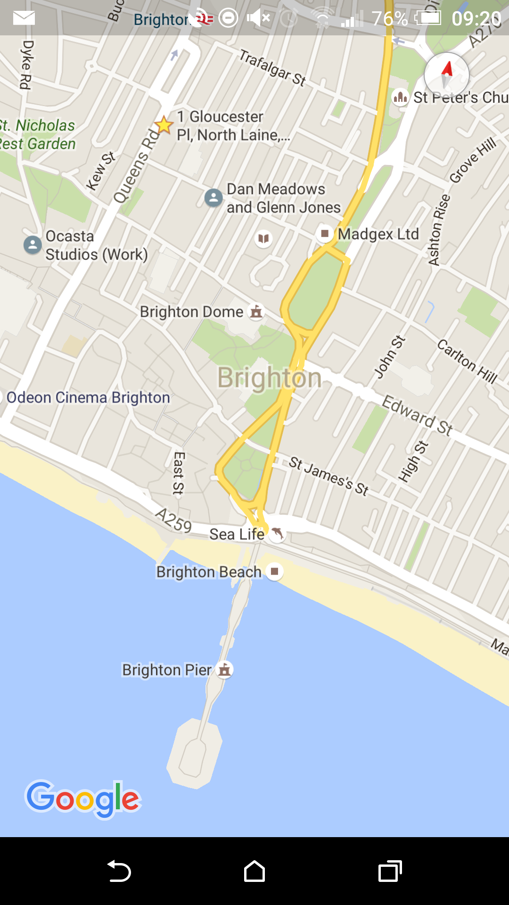
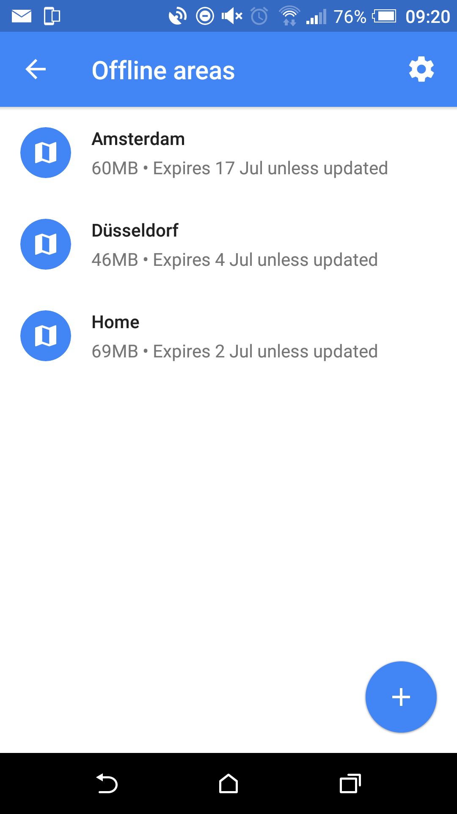

Extending theoffline web
"persistence of experience" for distant sources of content
https://www.washingtonpost.com/pwa/


Andrew Betts - https://trib.tv/2016/06/05/progressively-less-progressive/
The guardian jobs website

Responsive layout

Mockup of a possible offline version
Mockups of possible offline versions


Andrew Betts - https://trib.tv/2016/06/05/progressively-less-progressive/
"App shell" terminology and concept has issues

An approach that's moresite funiture cache than app-shell
Tipping points foroffline UX and architecture
- The "Lie-fi" gap (offline first)
- All content is NOT equalwhen offlining a site
- Streams and notification UX patterns
1. The "Lie-fi" gap (offline first)
2. All content is NOT equal when offlining a site
- Size
- Frequency of renewal
- Multiple conflicting writes
- Relevance to user
3. Streams and notification UX patterns

The move to streams and notification in mobile apps can just be seen as part of the evolution of the products we design to communicate.
I would suggest these features are also driven by the offline properties (restrictions) of mobile devices.
What elements of document search can be provided offline?
Mani
Document based search tool in javascripthttps://github.com/glennjones/mani
Creating the index and loading the documents
var options = {
'text': [
{'path': 'title', 'boost': 20},
{'path': 'text'}
]
}
var index = new Mani(options);
index.add({
title: 'Application Cache: Douchebag',
text: 'The Application Cache is one of the cool bits of HTML5...',
tags: ['appcache','html5','web app','offline']
...
});Creating a query
var results = index.search({
'text': 'promises'
})
Free text query
- Simple
- Paging
- Sort
Facets
- Simple
- Properties
- Text
Structured queries
- Simple
- Operators
- Complex
Creating Geo Index
var options = {
'text': [
{'path': 'name', 'boost': 20},
{'path': 'tag'}
],
'geo': {
'point': {
'latitudePath': 'location.latitude',
'longitudePath': 'location.longitude',
}
}
}
var index = new Mani(options)Geo
- Nearby
- Offset
- Complex
Serialize data and indexes to JSON
var index = new Mani(options);
index.add( [...] );
// To JSON
var json = JSON.stringify( index.toJSON() );
// From JSON
index.fromJSON( JSON.parse( json ));Persistent browser storage
var index = new Mani(options);
var persist = new Persist(index, {
name: 'places',
auto: true
}, function(err, items){
// add action such as search
});Built on top of
This project stands on the shoulders of others:
- lunrjs - free text search
- nedb - the query engine from nedb
- geolib - nearby search
- localForage - data persistence
What's still missing from Mani?
- Sync
- Real-time updates
- Baked in web worker support
- Indexdb support
- Promises
- Data typing
Maybe there is no need to reinvent the wheel - consider using:
What did I learn...
An asymmetrical offline experience is a valid design outcome


You can provide document search offline
Within tight constraints you can provide free text, geo search and mix that with structured queries and facets.
Mani is an experiment and is NOT production code